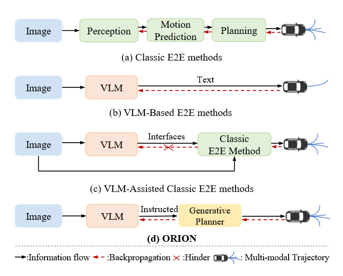
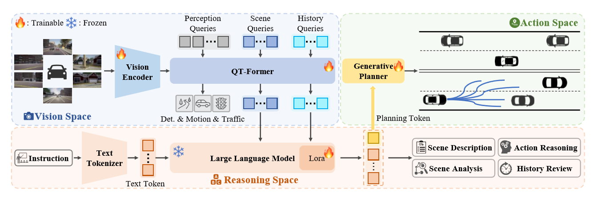
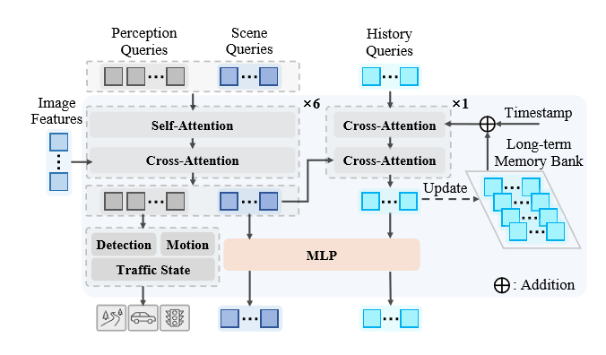
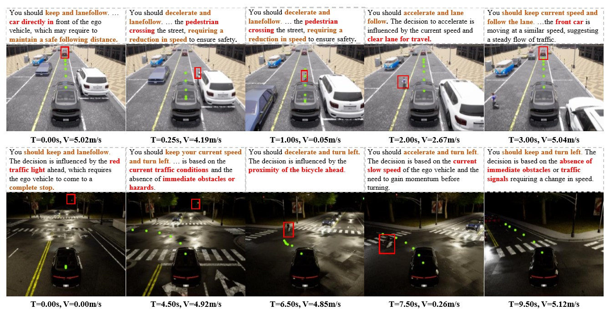
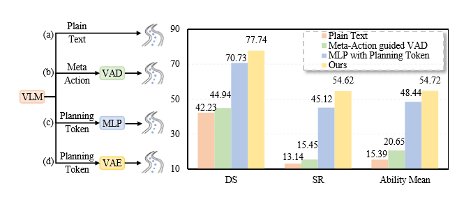
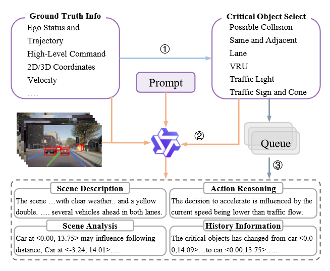
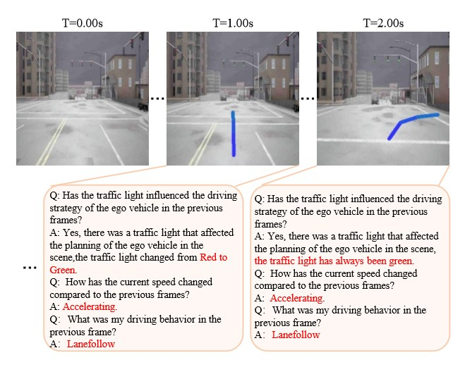
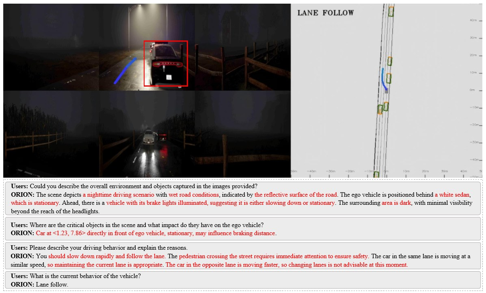
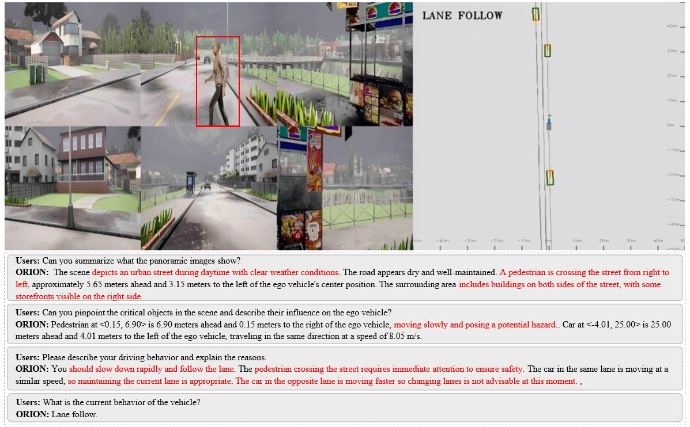

目次
ORION: A Holistic End-to-End Autonomous Driving Framework by Vision-Language Instructed Action Generation
Haoyu Fu1*、Diankun Zhang2*、Zongchuang Zhao1*、Jianfeng Cui2、Dingkang Liang1†、Chong Zhang2、Dingyuan Zhang1、Hongwei Xie2†、Bing Wang2、Xiang Bai1
1 Huazhong University of Science and Technology、2 Xiaomi EV
{hyfu, zcuangzhao, dkliang}@hust.edu.cn
https://xiaomi-mlab.github.io/Orion/
arXiv:2503.19755v1 [cs.CV]、2025年3月25日
翻訳について：原文 PDF は
56_ORION_2503.19755.pdf（全 18 ページ）。本文、図の説明、図中ラベル、表、脚注、付録を訳出し、論文タイトルと参考文献は原文のまま掲載。図は原図を掲載し、英語ラベルの日本語訳を併記した。数式・数値・引用番号・コードの識別子は原文を維持。原文の記述に関する補足は「訳注」と明示し、本文と区別している。
要旨
エンドツーエンド（E2E）自動運転手法は、因果推論能力が限られているため、インタラクティブな閉ループ評価において正しい判断を下すことに依然として苦戦している。現在の手法は、この難題を解決するために視覚言語モデル（Vision-Language Models; VLM）の強力な理解・推論能力を活用しようとしている。しかし、意味的な推論空間と行動空間における純粋に数値的な軌道出力との間のギャップのために、閉ループ評価で良好な性能を示す E2E 手法向け VLM はほとんどないという問題は依然として未解決である。この問題に取り組むため、我々は視覚言語で指示された行動生成による全体的（holistic）E2E 自動運転フレームワーク ORION（hOlistic E2E autonomous dRiving framework by vIsion-language instructed actiON generation）を提案する。ORION は、長期の履歴コンテキストを集約する QT-Former、運転シナリオの推論を行う大規模言語モデル（Large Language Model; LLM）、精密な軌道予測のための生成プランナーを独自に組み合わせる。さらに ORION は推論空間と行動空間を整合させ、視覚質問応答（VQA）タスクと計画タスクの両方に対する統一的な E2E 最適化を実現する。我々の手法は、難度の高い Bench2Drive データセットにおいて 77.74 の運転スコア（Driving Score; DS）と 54.62% の成功率（Success Rate; SR）という優れた閉ループ性能を達成し、最先端（SOTA）手法を 14.28 DS および 19.61% SR という大差で上回る。

図1：異なる E2E パラダイムの比較。我々の ORION フレームワークは、生成プランナーを介して推論空間と行動空間の間に微分可能な接続を確立する。
図中ラベル：(a) Classic E2E methods＝従来型 E2E 手法、Image＝画像、Perception＝知覚、Motion Prediction＝動き予測、Planning＝計画、(b) VLM-Based E2E methods＝VLM ベースの E2E 手法、Text＝テキスト、(c) VLM-Assisted Classic E2E methods＝VLM 支援型の従来型 E2E 手法、Interfaces＝インターフェース、Classic E2E Method＝従来型 E2E 手法、(d) ORION：Instructed＝指示、Generative Planner＝生成プランナー、Information flow＝情報の流れ、Backpropagation＝誤差逆伝播、Hinder＝阻害、Multi-modal Trajectory＝マルチモーダル軌道
1 はじめに
エンドツーエンド（E2E）自動運転は近年、著しい進歩を遂げている。従来型の E2E 手法［8, 18, 25, 67, 70］は、図1(a) に示すように、知覚［27, 43, 66］、予測［7, 15, 50］、計画［17, 44］の各モジュールをマルチタスク学習によって統合する。これらの手法は専門家のデモンストレーションを模倣することで運転軌道を最適化し、開ループ評価で有望な性能を達成している［6, 53］。しかしながら、これらの手法には複雑な因果推論を完遂するための常識が欠けている。その結果、自律的な意思決定と動的な環境とのインタラクションを必要とする包括的な閉ループベンチマーク［23］では苦戦する。近年、視覚言語モデル（VLM）［1, 10, 39, 57］は、大規模データによる学習を通じて豊富な世界知識と整合した視覚言語空間を蓄積しており、E2E 自動運転の実現に新たな洞察を与えている。
脚注：* 同等の貢献。† プロジェクトリーダー。本研究は Haoyu Fu と Zhongchuang Zhao が Xiaomi EV のインターンであった期間に行われた。
こうした進歩にもかかわらず、E2E 自動運転に VLM を活用することは容易ではない。VLM の能力は意味的な推論空間に焦点を当てている一方、E2E 手法が必要とするのは行動空間における数値的な計画結果だけだからである。いくつかの手法［19, 49, 59, 60, 63］は、図1(b) に示すように、VLM を用いてテキストベースの計画結果を直接出力しようとする。このパラダイムは簡便であるが、VLM は数学的計算や数値推論の処理には適していない［13, 42］。加えて、VLM 固有の自己回帰メカニズムによる制約から、このフレームワークは単一の結果しか推論せず、これは人間の計画が本来持つ不確実性と整合しない［8］。したがって、E2E 自動運転に VLM を直接用いると、複雑なシーンでは準最適な解を生み出す可能性がある［62］。他の手法は、図1(c) に示すように、VLM が出力するメタ行動（例えば左折）を用いて従来型 E2E 手法を支援することでギャップを埋めようとしている［26, 40］。これらは推論空間の情報を行動空間へ伝達するために、入念に設計されたインターフェースを採用する。しかし、このパラダイムは 2 つの空間を切り離してしまうため、軌道最適化と VLM の推論過程との協調的な最適化が妨げられる。そのため、上記のフレームワークでは E2E 計画に対する VLM の能力が十分に活用されていない。
この問題に取り組むため、我々は視覚言語で指示された行動生成による全体的 E2E 自動運転フレームワーク（hOlistic E2E autonomous dRiving framework by vIsion-language instructed actiON generation）、略して ORION を提案する。意味情報が詳細な画像特徴の生成を制御する条件付き生成の分野［28, 38, 47, 48］に着想を得て、我々は生成モデルが多様な種類のデータ（例えば画像、テキスト）の統一的な分布を構築できることを見出した。そこで、VLM の推論空間と軌道の行動空間が異なるドメインに属することを踏まえ、2 つの空間を整合させるための統一的な潜在表現を確立する生成プランナーを導入する。導入したこのモジュールにより、VLM の推論情報を活用して軌道を構築し、モデルがシーン情報と運転行動の間の因果関係を捉えられるようにする。
さらに、履歴情報が現在のシーンにおける軌道計画にしばしば影響するため、長期記憶が E2E 自動運転に必要であることはよく知られている。既存の E2E 手法向け VLM［19, 62］は通常、時間的モデリングのために複数フレームの画像を連結する。これらは VLM のトークン長に制約され、大きな計算オーバーヘッドを招く。そこで我々は、Q-Former 型のアーキテクチャで特徴を抽出する OmniDrive［59］に動機づけられ、クエリベースの時間モジュールである QT-Former を導入する。メモリバンクと履歴クエリの集合を活用することで、QT-Former は重要な過去のシーン情報を効果的に保存・抽出して長期の視覚コンテキストを集約し、推論空間と行動空間の時間的知覚能力をさらに高める。
我々は、CARLA［11］シミュレータに基づいてインタラクティブなシナリオを構築する Bench2Drive データセット上で、ORION の閉ループ運転能力を評価する。ORION は 77.74 の運転スコア（DS）と 54.62% の成功率（SR）を達成し、従来の SOTA 手法［24］を運転スコアで 14.28、成功率で 19.61% 上回っており、ORION の強力な優位性を示している。
ORION の利点は 3 つの側面にある：1) データの潜在分布を特徴づける生成モデルの能力のおかげで、生成プランナーを通じて VLM の推論空間と軌道の行動空間との間のギャップを埋め、VLM がシーンを理解して軌道生成を指示できるようにする。2) ORION の QT-former は長期の時間的依存関係を効果的に捉え、モデルが時間的な視覚コンテキストを推論空間と行動空間に統合できるようにする。3) 余計な工夫なしに、ORION は Bench2Drive 閉ループベンチマークで優れた性能を達成する。実験はまた、ORION が多様な生成モデルと互換性があることを示しており、提案フレームワークの柔軟性をさらに実証している。
2 関連研究
2.1 エンドツーエンド自動運転
エンドツーエンド自動運転［61, 68］は、生のセンサデータを直接処理して運動軌道や制御信号を予測し、誤差の蓄積を最小化するようにシステム全体を同時に最適化することを目指す。UniAD［18］や VAD［25］などの最近の研究は、知覚、予測、計画を統一的な計画フレームワークに統合し、フレームワークを最終的に計画指向のものにしている。VADv2［8］は確率的計画を導入し、行動の確率分布を出力して、そこから 1 つの行動をサンプリングして車両を制御する。GenAD［70］と DiffusionDrive［32］は、生成モデルを用いてマルチモーダルな軌道を予測する、エンドツーエンド自動運転の新たなパラダイムを探求している。しかし、Ego-MLP［64］や BEV-Planner［31］で強調されているように、これらの手法が主に優れているのは、モデルが自車状態（ego status）に容易に過学習しうる開ループ評価においてである。一部の研究［8, 21, 22, 70］は頑健な運転能力を評価するために CARLA［11］での閉ループ評価を採用しているが、その性能は依然として準最適であり、開ループと閉ループの結果の間に顕著なギャップがあることを露呈している。そこで我々は、開ループ評価と閉ループ評価の両方で優れた性能を示す E2E 自動運転システムの構築を目指す。
2.2 視覚言語モデル（VLM）
VLM［1, 3, 10, 30, 35, 57］は、さまざまな視覚エンコーダ［45, 65］を通じて大規模言語モデル（LLM）［39, 55］に視覚情報を導入し、強力な視覚的文脈理解と推論能力を示している。LLaVA シリーズ［35, 36］は、画像とテキストの整合を行うために視覚的インストラクションチューニングを採用している。Monkey［30］は画像を分割することで細部の理解を向上させる。InternVL シリーズ［9, 10］は、動的解像度戦略によって視覚的細部の理解をさらに強化する。しかし、ほとんどの手法は多数の視覚トークンを MLP によって言語空間に写像するため、高い計算コストを招く。この負担を軽減するため、QwenVL［4］と Flamingo［2］はクロスアテンションを用いてトークンの冗長性を削減し、Qwen2VL［57］は多様なモダリティを同時に処理するための動的解像度とマルチモーダル回転位置埋め込み（M-RoPE）によって効率を高めている。これらに着想を得て、我々はクエリの集合とクロスアテンション演算を活用して多視点画像の特徴を抽出する QT-Former を導入する。

図2：視覚・推論・行動空間を整合させる全体的 E2E フレームワークである ORION のパイプライン。3 つの主要コンポーネントから構成される。すなわち、長期コンテキストを抽出し、視覚エンコーダの視覚空間と LLM の推論空間をつなぐ QT-Former、推論タスクを実行して計画トークンを予測する LLM、そして推論空間と行動空間を橋渡しし、計画トークンを条件としてマルチモーダル軌道を生成する生成プランナーである。
図中ラベル：Trainable＝学習対象、Frozen＝凍結、Vision Space＝視覚空間、Vision Encoder＝視覚エンコーダ、Perception Queries＝知覚クエリ、Scene Queries＝シーンクエリ、History Queries＝履歴クエリ、Det. & Motion & Traffic＝検出・動き・交通、Action Space＝行動空間、Generative Planner＝生成プランナー、Planning Token＝計画トークン、Instruction＝指示、Text Tokenizer＝テキストトークナイザ、Text Token＝テキストトークン、Large Language Model＝大規模言語モデル、Reasoning Space＝推論空間、Scene Description＝シーン記述、Action Reasoning＝行動推論、Scene Analysis＝シーン分析、History Review＝履歴の振り返り
2.3 エンドツーエンド自動運転のための VLM
VLM は優れた文脈理解と包括的な世界知識を示しており、自動運転への応用が動機づけられている。いくつかの手法［19, 59, 62］は、環境知覚とテキスト形式での説明可能な軌道予測に VLM を直接用いている。例えば、Omnidrive［59］は StreamPETR［58］を Q-Formar3D として採用して現在のシーン特徴を圧縮し、視覚と推論の空間をつないだうえでテキストによる軌道予測を行う。大規模データで学習された EMMA［19］は、Gemini［3］が離散的なテキストによる計画を予測できるようにし、強力な開ループ性能を示している。他の研究［26, 54］は、VLM を代表的な E2E モデルと高速・低速のデュアルシステムで統合している。DriveVLM［54］は VLM を活用して低頻度の軌道を予測し、それを E2E モデルが精緻化する。Senna［26］はさらに、低頻度の軌道をメタ行動に置き換え、VAD［25］が動きを予測するよう誘導する。これらの手法は開ループ評価しか実施していない。DriveMLM［60］と LMDrive［49］は VLM を活用して閉ループ評価を実施しているが、単純な CARLA Town05Long ベンチマークに制約されており、複雑なシナリオの処理には苦戦している。これに対し我々は、生成プランナーを用いて VLM の推論空間と軌道の行動空間を橋渡しし、Bench2Drive の複雑な実世界の運転シナリオにおいて、解釈可能な行動判断とともに精密な軌道を生成する全体的 E2E フレームワークを提案する。
3 手法
本論文では、視覚言語モデルで指示された行動生成による全体的エンドツーエンド自動運転フレームワーク（hOlistic end-to-end autonomous dRiving framework by vIsion-language model instructed actiON generation）、略して ORION を提案する。ORION のパイプラインを図2 に示す。具体的には、現在のシーンの多視点画像が与えられると、ORION はまず視覚エンコーダで画像トークンを符号化する。次に QT-Former（3.1 節）が多様なクエリを活用して、長期の視覚コンテキストを集約し、画像トークンを圧縮し、交通要素を知覚する。続いて LLM（3.2 節）が、圧縮されたシーン特徴と過去の視覚情報をユーザの指示と組み合わせ、多様な理解・推論タスクを実行して計画トークンを生成する。最後に、生成プランナー（3.3 節）が LLM の推論空間と軌道の行動空間を橋渡しし、計画トークンを条件としてマルチモーダル軌道を予測する。ORION はこれらの中核コンポーネントを通じて視覚・推論・行動空間を効果的に整合させ、統一された空間においてシーン理解と軌道生成の協調的な最適化を実現する。
3.1 QT-Former

図3：QT-Former の詳細なアーキテクチャ。多様なクエリと画像特徴を入力として受け取り、交通要素の検出、動きの予測、長期の視覚コンテキストの集約を行う。
図中ラベル：Perception Queries＝知覚クエリ、Scene Queries＝シーンクエリ、History Queries＝履歴クエリ、Image Features＝画像特徴、Self-Attention＝自己注意、Cross-Attention＝クロスアテンション、Timestamp＝タイムスタンプ、Long-term Memory Bank＝長期メモリバンク、Update＝更新、Detection＝検出、Motion＝動き、Traffic State＝交通状態、Addition＝加算
視覚エンコーダから得られる多視点画像特徴 \( F_m \) を圧縮・抽出しつつ長期の情報モデリングを実現するため、図3 に示すように、クエリベースの時間モジュールである QT-Former を導入する。具体的には、Q-Former3D［59］に従い、まず 2 種類の学習可能なクエリ、すなわちシーンクエリ \( Q_s \in \mathbb{R}^{N_s \times C_q} \) と知覚クエリ \( Q_p \in \mathbb{R}^{N_p \times C_q} \) を用意する。ここで \( N_s \) と \( N_p \) はそれぞれシーンクエリと知覚クエリの数、\( C_q \) はクエリのチャネル数である。\( Q_s, Q_p \) は自己注意（SA）によって処理され、互いの情報を交換する。次に、クロスアテンション（CA）モジュールにおいて、3D 位置エンコーディング［37］\( P_m \) を付与した画像特徴 \( F_m \) と相互作用する。その後、知覚クエリは物体検出（例えば重要な物体や車線）、交通状態、動的エージェントの動き予測のための複数の補助ヘッドに入力される。シーンクエリは、現在のシーンの主要な情報を表すトークンとして機能する。
さらに、重要な履歴情報（例えば以前の道路状況や自車状態）を効率的に取り出し保存するために、履歴クエリの集合 \( Q_h \in \mathbb{R}^{N_h \times C_q} \) と長期メモリバンク \( M \in \mathbb{R}^{(N_h \times n) \times C_q} \) を用いる。ここで \( N_h \) は履歴クエリの数、\( n \) は最大の履歴フレーム長である。CA ブロックを通じて、\( Q_h \) を用い、相対タイムスタンプ埋め込み \( P_t \) を付与した \( M \) 内の過去フレームのクエリを抽出する。次に \( Q_h \) は別の CA ブロックで現在のシーン特徴 \( Q_s \) と相互作用し、現在のシナリオに関する関連する詳細の抽出を可能にする。この過程は次のように定式化できる。
\[ \begin{aligned} Q_h &= \mathrm{CA}(Q_h, M + P_t, M + P_t), \\ \hat{Q}_h &= \mathrm{CA}(Q_h, Q_s, Q_s), \end{aligned} \tag{1} \]
ここで \( P_t \) は相対タイムスタンプ埋め込みを表す。
続いて、更新された履歴クエリ \( \hat{Q}_h \) は、先入れ先出し（First-In-First-Out; FIFO）の置換方針に従ってメモリバンク \( M \) に保存される。これは次のように定式化される。
\[ M = [\hat{Q}_h^{t-n}, \cdots, \hat{Q}_h^{t-1}, \hat{Q}_h^{t}], \tag{2} \]
ここで \( t \) は現在のフレーム時刻である。
いくつかの手法［51, 58］もメモリバンクを利用して先行する情報を保存しているが、それらは通常、圧縮された履歴情報を保存するだけで、現在のシーン情報の抽出を導くことはない。これに対し我々は、少数の履歴クエリを初期化して、履歴情報と最も密接に関連する現在のシーン特徴をさらに抽出し、モデルの長期記憶能力を高める。
最後に、2 層の MLP を用いて、更新された履歴クエリ \( \hat{Q}_h \) と現在のシーン特徴 \( Q_s \) を、LLM の推論空間における履歴トークン \( x_h \) とシーントークン \( x_s \) に変換する。
3.2 大規模言語モデル
行動空間において妥当な軌道を生成するよう生成プランナーに指示するには、現在の運転シナリオの質の高い推論が必要であるため、LLM は我々のフレームワークにおいて中心的な役割を担う。
図2 に示すように、ユーザの指示はまずテキストトークナイザによって言語トークン \( x_q \in \mathbb{R}^{L \times C} \) に符号化される。ここで \( L \) はトークン長、\( C \) は LLM の次元である。次に、シーントークン \( x_s \) と履歴トークン \( x_h \) が言語トークン \( x_q \) と結合され、LLM に入力される。
LLM の豊富な世界知識と卓越した推論能力を活用し、ORION は運転シナリオにおいて、シーン記述、履歴情報の振り返り、シーン分析、行動推論を含む、テキストベースのさまざまな理解・推論タスクを実行する。同時に、運転シナリオ全体の理解と推論のコンテキストを \( s \) に蓄積するため、最後の QA として、特別な計画トークン \( s \) を含む計画 QA テンプレートを LLM 用に設計する。これは形式的に次のように書ける。
\[ s \sim p(s \mid x_s, x_h, x_q, x_a), \tag{3} \]
ここで \( x_a \) は LLM が生成した回答を表す。計画トークン \( s \) の埋め込みは、軌道生成を制御する条件として機能する。
しかし、LLM が運転シナリオを包括的に理解できるよう学習させるための、閉ループシミュレーション環境における高品質な VQA アノテーションは依然として不足している。そこで我々は、Qwen2-VL［57］による完全自動の VQA アノテーションパイプラインを用いて Bench2Drive データセットを拡張し、閉ループシミュレーションにおける VLM の研究をさらに促進することを期待して、VQA データセット Chat-B2D を提案する。Chat-B2D とそのアノテーションパイプラインの詳細は付録に示す。
3.3 生成プランナー
生成モデル［14, 28, 48］は、データの分布を学習することで、データ内の本質的な特徴を効果的に捉えることができる。最近の研究［5, 38, 47］は、異なるモダリティのデータの潜在空間の間に意味的な相関があり、一方のモダリティ空間の分布パラメータを調整することで、別のモダリティ空間の生成過程を精密に制御できることを示している。
生成分野に着想を得て、我々は推論空間と行動空間の間のギャップを埋める生成プランナーを導入する。具体的には、行動空間における現在の軌道 \( a \) を条件付き確率分布 \( p(a \mid s) \) として定式化する。ここで \( s \) は計画トークンである。\( p(a \mid s) \) を構築するには、生成分野に多くの優れた手法（例えば変分オートエンコーダ（VAE）［28］や拡散モデル［48］）がある。
VLM の推論空間と軌道の行動空間とでは分布に本質的な違いがあるため、VAE［28］モデルを用いて両者をガウス分布において整合させる。2 層の MLP を用いて、状態 \( s \) と正解軌道 \( t \) の両方を潜在空間のガウス変数 \( z \) に射影する。これを次のように表す。
\[ p(z_s \mid s) \sim N(\mu_s, \sigma_s^2),\ p(z_t \mid t) \sim N(\mu_t, \sigma_t^2), \tag{4} \]
ここで \( N(\mu, \sigma^2) \) は平均 \( \mu \)、標準偏差 \( \sigma \) のガウス分布を表す。次に、Kullback-Leibler ダイバージェンス損失を用いて分布の一致を課す。これは次のように表される。
\[ \mathcal{L}_{vae} = D_{KL}(p(\mathbf{z} \mid \mathbf{s}), p(\mathbf{z} \mid \mathbf{t})). \tag{5} \]
最後に、GenAD［70］の GRU デコーダを用いて、潜在空間 \( z \) から軌道を復号する。重要な点として、本論文における VAE の機能は GenAD の VAE と同じではない。我々は、推論空間と行動空間の間のギャップを埋めることを目的として、自車の視点から推論空間で符号化された単一のトークンのみを入力として用いる。これに対し後者は、BEV 空間で符号化されたすべてのエージェントの特徴を入力として活用し、自車と他のエージェントの両方の高度に構造化された軌道の特定のパターンを学習するよう設計されている。
加えて、軌道生成のために VAE を拡散モデルなどの別の生成モデルに置き換えることも試みる。潜在空間での分布学習を通じて推論空間と行動空間の間のギャップを埋める提案手法の恩恵により、我々のフレームワークはその場合でも他の手法と比べて優れた性能を示す（詳細は 4.5 節）。
3.4 学習目的
提案する QT-Former の検出タスクについて、検出損失は \( \mathcal{L}_{det} = \mathcal{L}_{cls} + \mathcal{L}_{reg} \) と定義される。ここで \( \mathcal{L}_{cls} \) は focal loss［34］、\( \mathcal{L}_{reg} \) は L1 損失である。交通状態と動き予測については、損失をそれぞれ \( \mathcal{L}_{tra} \) および \( \mathcal{L}_m = \mathcal{L}_{mcls} + \mathcal{L}_{mreg} \) と定義する。ここで \( \mathcal{L}_{tra} \) と \( \mathcal{L}_{mcls} \) は focal loss、\( \mathcal{L}_{mreg} \) は L1 損失である。QT-Former の総損失は次のとおりである。
\[ \mathcal{L}_{qt} = \mathcal{L}_{det} + \mathcal{L}_{tra} + \mathcal{L}_m. \tag{6} \]
LLM については、自己回帰的な交差エントロピー損失 \( \mathcal{L}_{ce} \) を用いる。我々のフレームワークの生成プランナーについては、\( \mathcal{L}_{vae} \) が推論空間と行動空間を整合させるために用いられる Kullback-Leibler ダイバージェンス損失である。VAD［25］に従い、計画の予測に衝突損失 \( \mathcal{L}_{col} \)、境界損失 \( \mathcal{L}_{bd} \)、MSE 損失 \( \mathcal{L}_{mse} \) を採用する。生成プランナーの総損失は次のとおりである。
\[ \mathcal{L}_{gp} = \mathcal{L}_{vae} + \mathcal{L}_{mse} + \mathcal{L}_{col} + \mathcal{L}_{bd}. \tag{7} \]
まとめると、提案する ORION の総損失は次のとおりである。
\[ \mathcal{L} = \mathcal{L}_{qt} + \mathcal{L}_{ce} + \mathcal{L}_{gp}. \tag{8} \]
4 実験
4.1 データセットと評価指標
データセット。我々は、CARLA V2［11］上の E2E 自動運転向け閉ループ評価プロトコルである Bench2drive データセット［23］で ORION の学習と評価を行う。同データセットは公式の学習セットを提供しており、他のすべてのベースラインとの公平な比較のため、我々はそのベースセット（1000 クリップ）を用い、学習用 950 クリップと開ループ検証用 50 クリップに分割する。各クリップは、特定の交通シーン内での約 150 メートルの連続走行を捉えている。閉ループ評価では、Bench2drive が設計した公式の 220 本の短いルート（44 のインタラクティブなシナリオにわたり、シナリオごとに 5 ルート）で提案手法を評価する。加えて、nuScenes［6］の開ループ評価でも他の SOTA ベースラインと比較しており、これは付録に示す。
評価指標。Bench2drive には閉ループ評価のための 5 つの指標、すなわち運転スコア（DS）、成功率（SR）、効率（Efficiency）、快適性（Comfortness）、マルチアビリティ（Multi-Ability）がある。成功率は、制限時間内に正常に完走したルートの割合を定量化する。運転スコアは CARLA［11］に従い、ルート完走状況と違反ペナルティの両方を組み込んだもので、違反は割引係数によってスコアを減少させる。効率と快適性は、それぞれ走行中の自動運転システムの速度性能と快適性を測定するために用いられる。マルチアビリティは、市街地走行のための 5 つの高度なスキルを個別に測定する。開ループ評価では、L2 距離誤差と衝突率を用いる。加えて、VQA タスクにおける ORION の性能を評価するために CIDEr［56］、BLEU［41］、ROUGE-L［33］を用いる。
4.2 実装の詳細
モデル設定。Bench2Drive 上の従来型 E2E ベースライン［18, 25, 70］と同様に、ORION は HD マップを一切用いない手法であり、軌道予測の入力条件として車線中心の位置（すなわち目標点（target point; TP））ではなくナビゲーションコマンド（Navigation Command; NC）のみを用いる。ORION はアンカーフリーの手法であり、Bench2Drive で定義された 6 つの NC に対応する 6 モードの軌道予測を出力する。
学習過程。すべての実験は、80 GB のメモリを持つ 32 基の NVIDIA A800 GPU で実施する。Omnidrive［59］に従い、視覚エンコーダとして EVA-02-L［12］を採用する。ORION には Vicuna v1.5［69］を用い、LoRA［16］でファインチューニングする。ランク次元と alpha は 16 に設定する。シーンクエリ、知覚クエリ、履歴クエリの数のデフォルト値はそれぞれ 512、600、16 である。メモリバンクに保存するフレーム数 \( n \) は 16 に設定する。学習中、入力画像にはデータ拡張を適用し、画像はまず 640 × 640 の解像度にリサイズされる。学習の詳細は付録に示す。
| 手法 | 出典 | 条件 | モダリティ | 閉ループ指標 | 開ループ指標 | |||
|---|---|---|---|---|---|---|---|---|
| DS↑ | SR(%)↑ | Efficiency↑ | Comfortness↑ | Avg. L2↓ | ||||
| TCP* ［61］ | NeurIPS 22 | TP | C | 40.70 | 15.00 | 54.26 | 47.80 | 1.70 |
| TCP-ctrl* | NeurIPS 22 | TP | C | 30.47 | 7.27 | 55.97 | 51.51 | - |
| TCP-traj* | NeurIPS 22 | TP | C | 59.90 | 30.00 | 76.54 | 18.08 | 1.70 |
| TCP-traj w/o distillation | NeurIPS 22 | TP | C | 49.30 | 20.45 | 78.78 | 22.96 | 1.96 |
| ThinkTwice* ［22］ | CVPR 23 | TP | C | 62.44 | 31.23 | 69.33 | 16.22 | 0.95 |
| DriveAdapter* ［21］ | ICCV 23 | TP | C&L | 64.22 | 33.08 | 70.22 | 16.01 | 1.01 |
| AD-MLP ［64］ | arXiv 23 | NC | C | 18.05 | 0.00 | 48.45 | 22.63 | 3.64 |
| UniAD-Tiny ［18］ | CVPR 23 | NC | C | 40.73 | 13.18 | 123.92 | 47.04 | 0.80 |
| UniAD-Base ［18］ | CVPR 23 | NC | C | 45.81 | 16.36 | 129.21 | 43.58 | 0.73 |
| VAD ［25］ | ICCV 23 | NC | C | 42.35 | 15.00 | 157.94 | 46.01 | 0.91 |
| GenAD ［70］ | ECCV 24 | NC | C | 44.81 | 15.90 | - | - | - |
| MomAD［52］ | CVPR25 | NC | C | 44.54 | 16.71 | 170.21 | 48.63 | 0.87 |
| DriveTransformer-Large ［24］ | ICLR 25 | NC | C | 63.46 | 35.01 | 100.64 | 20.78 | 0.62 |
| ORION(Ours) | - | NC | C | 77.74(+14.28) | 54.62(+19.61) | 151.48 | 17.38 | 0.68 |
表1：ベースセットにおける Bench2Drive での E2E-AD 手法の閉ループおよび開ループの結果。C/L はカメラ／LiDAR を指す。Avg. L2 は UniAD と同様に、2Hz で 2 秒間の予測について平均したものである。* はエキスパート特徴の蒸留を表す。NC：ナビゲーションコマンド、TP：目標点、DS：運転スコア、SR：成功率。
| 手法 | 出典 | 条件 | モダリティ | 能力 (%) ↑ | |||||
|---|---|---|---|---|---|---|---|---|---|
| Merging（合流） | Overtaking（追い越し） | Emergency Brake（緊急ブレーキ） | Give Way（譲り） | Traffic Sign（交通標識） | Mean（平均） | ||||
| TCP* ［61］ | NeurIPS 22 | TP | C | 16.18 | 20.00 | 20.00 | 10.00 | 6.99 | 14.63 |
| TCP-ctrl* | NeurIPS 22 | TP | C | 10.29 | 4.44 | 10.00 | 10.00 | 6.45 | 8.23 |
| TCP-traj* | NeurIPS 22 | TP | C | 8.89 | 24.29 | 51.67 | 40.00 | 46.28 | 34.22 |
| TCP-traj w/o distillation | NeurIPS 22 | TP | C | 17.14 | 6.67 | 40.00 | 50.00 | 28.72 | 28.51 |
| ThinkTwice* ［22］ | CVPR 23 | TP | C | 27.38 | 18.42 | 35.82 | 50.00 | 54.23 | 37.17 |
| DriveAdapter* ［21］ | ICCV 23 | TP | C&L | 28.82 | 26.38 | 48.76 | 50.00 | 56.43 | 42.08 |
| AD-MLP ［64］ | arXiv 23 | NC | C | 0.00 | 0.00 | 0.00 | 0.00 | 4.35 | 0.87 |
| UniAD-Tiny ［18］ | CVPR 23 | NC | C | 8.89 | 9.33 | 20.00 | 20.00 | 15.43 | 14.73 |
| UniAD-Base ［18］ | CVPR 23 | NC | C | 14.10 | 17.78 | 21.67 | 10.00 | 14.21 | 15.55 |
| VAD ［25］ | ICCV 23 | NC | C | 8.11 | 24.44 | 18.64 | 20.00 | 19.15 | 18.07 |
| DriveTransformer-Large ［24］ | ICLR 25 | NC | C | 17.57 | 35.00 | 48.36 | 40.00 | 52.10 | 38.60 |
| ORION (Ours) | - | NC | C | 25.00 | 71.11 | 78.33 | 30.00 | 69.15 | 54.72(+16.12) |
表2：ベースセットにおける E2E-AD 手法のマルチアビリティの結果。* はエキスパート特徴の蒸留を表す。C/L はカメラ／LiDAR を指す。NC：ナビゲーションコマンド、TP：目標点。
4.3 主要な結果
表1 に示すように、ORION の性能は Bench2Drive においてすべての E2E 手法を、エキスパート特徴の蒸留を用いる手法でさえも大きく上回る。具体的には、ORION は最新の SOTA 手法である DriveTransformer［24］を +14.28 DS、+19.61% SR 上回る。また DriveAdapter［21］に対しても +13.52 DS、+21.54% SR の改善を達成しており、DriveAdapter が Think2Drive［29］からエキスパート特徴を蒸留し、2 つのモダリティ（すなわちカメラと LiDAR）の入力を活用しているにもかかわらずである。上記の有望な結果は、ORION の優位性を効果的に示している。
加えて、マルチアビリティの結果を表2 に示す。ORION は平均能力において、DriveTransformer［24］および DriveAdapter［21］と比べてそれぞれ +16.12% および +12.64% の性能向上を達成する。具体的には、我々のモデルは追い越し（71.11%）、緊急ブレーキ（78.33%）、交通標識（69.15%）などいくつかのシナリオで卓越した性能を示しており、これは我々のモデルが VLM の強力な推論能力の恩恵を受け、運転シナリオにおける自車、動的要素、静的要素（交通標識）の間の因果的な相互作用を理解していることを示している。一方で、我々のモデルは合流と譲りにおいて DriveAdapter に後れを取っており、これは ORION が車線変更の判断を得意としていないことを示している。この現象は、車線変更の判断タイミングがより多様であるため、モデルが正しい因果関係を捉えることが難しくなることに起因する可能性がある［21］。
4.4 定性的結果

図4：Bench2Drive 閉ループ評価セットにおける ORION の定性的結果。茶色、赤、緑はそれぞれ、行動判断、運転判断に影響する物体、予測軌道を指す。
図中ラベル（上段、左から）：(1) 車線に沿ってそのまま走行すべきである（keep and lanefollow）。…自車の真正面に車があり、安全な車間距離を保つ必要があるかもしれない。(2) 減速して車線に沿って走行すべきである。…道路を横断する歩行者がいるため、安全確保のために速度を落とす必要がある。(3) (2) と同じ。(4) 加速して車線に沿って走行すべきである。加速の判断は、現在の速度と走行可能な空いた車線に影響されている。(5) 現在の速度を維持して車線に沿って走行すべきである。…前方車両が同程度の速度で走行しており、交通の流れが安定していることを示唆している。（下段、左から）(6) 車線に沿ってそのまま走行すべきである。この判断は前方の赤信号に影響されており、自車は完全に停止する必要がある。(7) 現在の速度を維持して左折すべきである。…現在の交通状況と、差し迫った障害物や危険がないことに基づいている。(8) 減速して左折すべきである。この判断は前方の自転車が近いことに影響されている。(9) 加速して左折すべきである。この判断は、自車の現在の低速と、旋回前に勢いをつける必要に基づいている。(10) そのまま左折すべきである。この判断は、速度変更を要する差し迫った障害物や交通信号がないことに基づいている。T＝時刻、V＝速度

図5：視覚言語で指示された行動生成の利点。DS と SR はそれぞれ運転スコアと成功率を表す。VAD［25］は従来型の E2E モデルである。
図中ラベル：Plain Text＝プレーンテキスト、Meta Action＝メタ行動、Planning Token＝計画トークン、Meta-Action guided VAD＝メタ行動で誘導された VAD、MLP with Planning Token＝計画トークンを用いる MLP、Ours＝提案手法、Ability Mean＝能力の平均
Bench2Drive の 2 つの典型的な閉ループ評価シナリオにおける ORION の定性的結果を図4 に示す。図は、我々のモデルが出力した運転行動の推論と軌道予測の両方を、対応する自車の状態とともに示している。ORION はシナリオにおける正しい因果関係を捉えて正しい運転判断を下し、その推論による指示に従って計画軌道を予測できることが観察され、我々の手法の驚くべき解釈可能性が示されている。さらなる定性的結果は付録に示す。
4.5 アブレーション研究
視覚言語で指示された行動生成の利点。本論文で提案する計画生成パラダイムの有効性を検証するため、我々のパラダイムを VLM ベースの E2E 自動運転手法における典型的な軌道予測パラダイムと比較する広範な実験を行う。比較対象は、図5 の左側に示すように、(a) プレーンテキスト出力［19, 59］、(b) 従来型 E2E 手法（例えば VAD［25］）が、精巧に設計された VLM インターフェース（例えばメタ行動）に誘導されて軌道を出力するデュアルシステムのパラダイム［26］、(c) MLP によって特殊トークンを復号して出力するもの［46］である。アブレーションの公平性を確保するため、異なるパラダイムの実験では ORION と同じセンサ入力、視覚エンコーダ、QT-former、VLM を用い、同じ戦略で学習する。各パラダイムの要件に応じて VLM の出力形式のみを調整する。
| 生成プランナー | 閉ループ | 開ループ | 能力 | ||
|---|---|---|---|---|---|
| DS↑ | SR(%)↑ | Avg. L2 (m)↓ | Avg. col (%)↓ | Avg. | |
| Diffusion | 71.97 | 46.54 | 0.73 | 0.96 | 46.68 |
| VAE (Ours) | 77.74 | 54.62 | 0.68 | 0.47 | 54.72 |
表3：多様な生成プランナーに関するアブレーション。DS と SR はそれぞれ運転スコアと成功率を表す。
| ID | 交通状態 | 動き予測 | メモリバンク | 出力タイプ | 閉ループ | ||
|---|---|---|---|---|---|---|---|
| T | G | DS↑ | SR(%)↑ | ||||
| 1 | ✓ | 56.33 | 26.05 | ||||
| 2 | ✓ | ✓ | 74.65 | 49.31 | |||
| 3 | ✓ | ✓ | ✓ | 74.07 | 49.77 | ||
| 4 | ✓ | ✓ | ✓ | ✓ | 77.74 | 54.62 | |
| 5 | ✓ | 25.45 | 10.38 | ||||
| 6 | ✓ | ✓ | ✓ | ✓ | 42.23 | 13.14 | |
表4：異なるフレームワークにおける QT-Former の設計に関するアブレーション。DS と SR はそれぞれ運転スコアと成功率を表す。交通状態（Traffic State）は明示的な交通状態の教師信号を用いることを意味する。T：プレーンテキスト、G：指示による生成器（Instructed Generator）。
| クエリ数 \( N_h \) | 閉ループ | 開ループ | ||
|---|---|---|---|---|
| DS↑ | SR(%)↑ | Avg. L2 (m)↓ | Avg. col (%)↓ | |
| 0 | 65.10 | 38.83 | 0.67 | 0.61 |
| 8 | 68.09 | 39.09 | 0.66 | 0.62 |
| 16 | 74.10 | 44.66 | 0.68 | 0.55 |
| 32 | 62.46 | 37.73 | 0.65 | 0.73 |
表5：履歴クエリ数のアブレーション。DS と SR はそれぞれ運転スコアと成功率を表す。
結果を図5 の右側に示す。プレーンテキストのパラダイムは最も性能が低く（42.23 DS、13.14% SR、15.39% の平均能力）、閉ループの運転シナリオにおけるプレーンテキスト出力の限界を示している。これはおそらく数値推論能力が不十分なためである［13, 42］。プレーンテキストのパラダイムと比較して、デュアルシステムのパラダイムはわずかな性能向上しか得られない。デュアルシステムのパラダイムの再現結果は、表1 における VAD の公式結果に非常に近いことに注意されたい。この結果は、デュアルシステムのパラダイムの性能が従来型 E2E 手法の能力不足によってボトルネックになっている可能性を示しているかもしれない。MLP デコーダのパラダイムの有効性は CarLLaVA［46］で検証されているが、我々のパラダイムはそれに対しても +7.01 DS、+9.5% SR、+6.28% の平均能力の性能向上を示す。この結果は、MLP が異なる空間の間で特徴を整合させる最も単純な方法であることに起因する可能性があり、これは本論文で提示した見解と一致する。加えて、MLP デコーダはマルチモーダル軌道の扱いに苦戦するため［8, 20］、閉ループ評価では依然として ORION に大きく後れを取っている。
異なる生成プランナーの分析。次に、推論・行動空間を橋渡しするために異なる生成プランナーを用いることの効果を調べる。具体的には、VAE を単純に置き換える形で拡散モデルを実装する。この拡散モデルは K-means による軌道アンカーを事前情報として用い、20 モードの軌道予測を出力する。結果を表3 に示す。VAE ベースの軌道生成器が拡散ベースのものに対して大幅な性能向上を示していることに注意されたい。主な理由は次のとおりであると我々は考える。1) 拡散の条件付きノイズ除去過程と比較して、VAE の潜在空間は VLM の推論情報をマルチモーダルな行動空間により直接的かつ効果的に整合させる。2) VAE の学習過程は本質的により安定しており、推論空間と行動空間のより良い整合を促進する。驚くべきことに、拡散を用いた場合でも、ORION は依然として DriveTransformer を +8.51 DS、+11.53% SR、+8.08% の平均能力で上回る。この印象的な結果は、我々のフレームワークの有効性と柔軟性を強調している。
QT-Former の設計の有効性。表4 は、導入した QT-Former の各設計に関する詳細なアブレーションを示している。明示的な交通状態の教師信号を活用することで（ID-2）、ORION は 74.65 DS と 49.31% SR を達成し、これはすでに DriveAdapter［21］と DriveTransformer［24］を大差で上回り、ベースライン（ID-1）と比べて +18.32 と +23.26% の改善となる。これは、交通信号をより良く理解することで、ORION が閉ループ評価における違反を直接減らせるためである。因果の混同（causal confusion）［21］のため、従来の手法にとっては、単に交通状態の教師信号を導入するだけで対応する因果関係を完全に理解することは容易ではなく、交通標識の手前で専門家の行動が混在する場合には特にそうであることは注目に値する［21, 22, 24, 61］。この結果はまた、ORION が推論空間と行動空間を整合させることで、VLM の推論能力をより良く活用して、シーン情報と運転行動の間の因果関係を捉えられることを証明している。この結論は表2 の結果からも検証でき、ORION は従来の E2E 手法［24］と比べて交通標識の能力で顕著な優位性（+17.05%）を示している。
次に、QT-Former の知覚ヘッドに動き予測モジュールを組み合わせると、+0.4% SR のわずかな改善が得られ、衝突率もさらに低下する。DS のわずかな低下は、CARLA ベンチマークのプロトコルにおける DS と SR のトレードオフに起因する可能性がある［71］。QT-Former にメモリバンクを組み込み、履歴情報に関する QA ペアで教師あり学習を行うと、+3.67 DS と +4.85% SR の向上につながり、最終性能は 77.74 DS と 54.62% SR まで押し上げられる。これは、我々のモデルが視覚トークンの長期的な時間記憶の恩恵を受けられることを示している。
QT-former をプレーンテキストの出力タイプにも適用する（ID-6）。これを活用することで、ベースライン（ID-5）に対してモデルの性能を +16.78 DS と +2.78% SR 改善する（訳注：表4 の値から計算すると SR の差は 13.14 − 10.38 = 2.76% である）。一方、同じ QT-former の設計のもとで、ORION はプレーンテキストの出力モードと比べて +35.51 DS と +41.48% SR のさらなる改善を達成しており、我々のフレームワークの有効性を示している。
履歴クエリ数の影響。異なる履歴クエリ数の影響をさらに調べるため、アブレーション実験を行う。ここでは学習過程を高速化するため、他の補助 VQA タスクを用いず、計画軌道と履歴 QA ペアのみでモデルを学習する。結果の詳細を表5 に示す。履歴クエリ数 \( N_h \) を 0 から 8 に増やすと、約 2.99 DS と 0.26% SR の顕著な性能向上がもたらされる。\( N_h \) をさらに 8 から 16 に増やすと、74.10 DS と 44.66% SR という最高性能を達成する最適点に至る。しかし、\( N_h \) を 16 から 32 に拡大すると、顕著な性能低下が見られる。より多くの履歴クエリを導入すると、運転シーンにおいて履歴情報よりも本質的である現在フレームの特徴を VLM が捉えることが妨げられるためであると我々は考える。
| ID | VQA FT | 計画 FT | 閉ループ | 言語 | 開ループ | |||
|---|---|---|---|---|---|---|---|---|
| DS↑ | SR(%)↑ | C↑ | B↑ | R↑ | Avg. L2 (m)↓ | |||
| 1 | ✓ | - | - | 65.65 | 50.82 | 77.65 | - | |
| 2 | ✓ | 74.10 | 44.66 | - | - | - | 0.68 | |
| 3 | ✓ | ✓ | 77.74 | 54.62 | 65.77 | 52.49 | 77.58 | 0.68 |
表6：補助 VQA タスクの学習の有効性。DS と SR はそれぞれ運転スコアと成功率を表す。C/B/R は CIDEr/BLEU/ROUGE-L を指す。FT：ファインチューニング。
VQA タスクの学習と計画タスクの学習の間の影響。表6 に示すとおりである。モデルは単一タスクの学習では推論能力と計画能力の両方を獲得することはできない。驚くべきことに、学習中に 2 つのタスクを同時に行うと、ORION は単一タスクの学習と比べて計画指標と言語指標の両方でより良い性能を達成する。具体的には、マルチタスク学習により、計画タスクでは +3.64 DS と +9.66% SR の改善（訳注：表6 の値から計算すると SR の差は 54.62 − 44.66 = 9.96% である）、VQA タスクでは +0.12 CIDEr、+1.67 BLEU の性能向上と ROUGE-L での同等の性能が得られる。さらに、この結果は、我々の自動パイプラインによって作成された Chat-B2D データセットの高い品質と妥当性も裏付けている。
5 結論
本論文では主に、エンドツーエンド自動運転のための VLM 手法が、VLM の推論空間を計画に用いられる純粋に数値的な行動空間と整合させる際に直面する課題に焦点を当てた。この難題のために、既存の手法が運転シナリオを分析すると同時に高品質なマルチモーダル予測軌道を出力することは容易ではない。この問題に対処するため、我々は視覚言語で指示された行動生成による全体的エンドツーエンド自動運転フレームワーク ORION を提案した。生成プランナーを活用し、長期の視覚コンテキストを取り込むことで、視覚・推論・行動空間を効果的に橋渡しする。広範な実験により提案フレームワークの柔軟性と優位性が検証され、ORION は閉ループの計画評価において顕著な改善を示し、SOTA 手法を上回った。
限界。ORION は Bench2Drive［23］の閉ループシミュレーション環境で良好な性能を示すが、リアルタイムの運転シナリオにおいては、スケーラブルな VLM の高い計算複雑性によって制約される。今後は、モデル圧縮や枝刈りなどの技術によって ORION の複雑性を削減し、モデルがリアルタイムの自動運転を実現できるようにしたいと考えている。
参考文献
参考文献は原文のまま掲載した（各項目末尾の被引用ページ番号は省略した）。
- Josh Achiam, Steven Adler, Sandhini Agarwal, Lama Ahmad, Ilge Akkaya, Florencia Leoni Aleman, Diogo Almeida, Janko Altenschmidt, Sam Altman, Shyamal Anadkat, et al. Gpt-4 technical report. arXiv preprint arXiv:2303.08774, 2023.
- Jean-Baptiste Alayrac, Jeff Donahue, Pauline Luc, Antoine Miech, Iain Barr, Yana Hasson, Karel Lenc, Arthur Mensch, Katherine Millican, Malcolm Reynolds, et al. Flamingo: a visual language model for few-shot learning. In Proc. of Advances in Neural Information Processing Systems, 2022.
- Rohan Anil, Sebastian Borgeaud, Yonghui Wu, Jean-Baptiste Alayrac, Jiahui Yu, Radu Soricut, Johan Schalkwyk, Andrew M Dai, Anja Hauth, Katie Millican, et al. Gemini: A family of highly capable multimodal models. arXiv preprint arXiv:2312.11805, 1, 2023.
- Jinze Bai, Shuai Bai, Shusheng Yang, Shijie Wang, Sinan Tan, Peng Wang, Junyang Lin, Chang Zhou, and Jingren Zhou. Qwen-vl: A frontier large vision-language model with versatile abilities. arXiv preprint arXiv:2308.12966, 2023.
- James Betker, Gabriel Goh, Li Jing, Tim Brooks, Jianfeng Wang, Linjie Li, Long Ouyang, Juntang Zhuang, Joyce Lee, Yufei Guo, et al. Improving image generation with better captions. Computer Science., page 8, 2023.
- Holger Caesar, Varun Bankiti, Alex H Lang, Sourabh Vora, Venice Erin Liong, Qiang Xu, Anush Krishnan, Yu Pan, Giancarlo Baldan, and Oscar Beijbom. nuscenes: A multimodal dataset for autonomous driving. In Proc. of IEEE Intl. Conf. on Computer Vision and Pattern Recognition, pages 11621–11631, 2020.
- Yuning Chai, Benjamin Sapp, Mayank Bansal, and Dragomir Anguelov. Multipath: Multiple probabilistic anchor trajectory hypotheses for behavior prediction. arXiv preprint arXiv:1910.05449, 2019.
- Shaoyu Chen, Bo Jiang, Hao Gao, Bencheng Liao, Qing Xu, Qian Zhang, Chang Huang, Wenyu Liu, and Xinggang Wang. Vadv2: End-to-end vectorized autonomous driving via probabilistic planning. arXiv preprint arXiv:2402.13243, 2024.
- Zhe Chen, Weiyun Wang, Hao Tian, Shenglong Ye, Zhangwei Gao, Erfei Cui, Wenwen Tong, Kongzhi Hu, Jiapeng Luo, Zheng Ma, et al. How far are we to gpt-4v? closing the gap to commercial multimodal models with open-source suites. Science China Information Sciences, page 220101, 2024.
- Zhe Chen, Jiannan Wu, Wenhai Wang, Weijie Su, Guo Chen, Sen Xing, Muyan Zhong, Qinglong Zhang, Xizhou Zhu, Lewei Lu, et al. Internvl: Scaling up vision foundation models and aligning for generic visual-linguistic tasks. In Proc. of IEEE Intl. Conf. on Computer Vision and Pattern Recognition, pages 24185–24198, 2024.
- Alexey Dosovitskiy, German Ros, Felipe Codevilla, Antonio Lopez, and Vladlen Koltun. Carla: An open urban driving simulator. In Conf. on Robot Learning, pages 1–16, 2017.
- Yuxin Fang, Quan Sun, Xinggang Wang, Tiejun Huang, Xinlong Wang, and Yue Cao. Eva-02: A visual representation for neon genesis. Image and Vision Computing, page 105171, 2024.
- Simon Frieder, Luca Pinchetti, Ryan-Rhys Griffiths, Tommaso Salvatori, Thomas Lukasiewicz, Philipp Petersen, and Julius Berner. Mathematical capabilities of chatgpt. Proc. of Advances in Neural Information Processing Systems, 36, 2024.
- Ian Goodfellow, Jean Pouget-Abadie, Mehdi Mirza, Bing Xu, David Warde-Farley, Sherjil Ozair, Aaron Courville, and Yoshua Bengio. Generative adversarial networks. Communications of the ACM, pages 139–144, 2020.
- Junru Gu, Chenxu Hu, Tianyuan Zhang, Xuanyao Chen, Yilun Wang, Yue Wang, and Hang Zhao. Vip3d: End-to-end visual trajectory prediction via 3d agent queries. In Proc. of IEEE Intl. Conf. on Computer Vision and Pattern Recognition, pages 5496–5506, 2023.
- Edward J Hu, Yelong Shen, Phillip Wallis, Zeyuan Allen-Zhu, Yuanzhi Li, Shean Wang, Lu Wang, and Weizhu Chen. Lora: Low-rank adaptation of large language models. In Proc. of Intl. Conf. on Learning Representations, 2022.
- Shengchao Hu, Li Chen, Penghao Wu, Hongyang Li, Junchi Yan, and Dacheng Tao. St-p3: End-to-end vision-based autonomous driving via spatial-temporal feature learning. In Proc. of European Conference on Computer Vision, pages 533–549, 2022.
- Yihan Hu, Jiazhi Yang, Li Chen, Keyu Li, Chonghao Sima, Xizhou Zhu, Siqi Chai, Senyao Du, Tianwei Lin, Wenhai Wang, et al. Planning-oriented autonomous driving. In Proc. of IEEE Intl. Conf. on Computer Vision and Pattern Recognition, pages 17853–17862, 2023.
- Jyh-Jing Hwang, Runsheng Xu, Hubert Lin, Wei-Chih Hung, Jingwei Ji, Kristy Choi, Di Huang, Tong He, Paul Covington, Benjamin Sapp, et al. Emma: End-to-end multimodal model for autonomous driving. arXiv preprint arXiv:2410.23262, 2024.
- Bernhard Jaeger, Kashyap Chitta, and Andreas Geiger. Hidden biases of end-to-end driving models. In Porc. of IEEE Intl. Conf. on Computer Vision, pages 8240–8249, 2023.
- Xiaosong Jia, Yulu Gao, Li Chen, Junchi Yan, Patrick Langechuan Liu, and Hongyang Li. Driveadapter: Breaking the coupling barrier of perception and planning in end-to-end autonomous driving. In Porc. of IEEE Intl. Conf. on Computer Vision, 2023.
- Xiaosong Jia, Penghao Wu, Li Chen, Jiangwei Xie, Conghui He, Junchi Yan, and Hongyang Li. Think twice before driving: Towards scalable decoders for end-to-end autonomous driving. In Proc. of IEEE Intl. Conf. on Computer Vision and Pattern Recognition, 2023.
- Xiaosong Jia, Zhenjie Yang, Qifeng Li, Zhiyuan Zhang, and Junchi Yan. Bench2drive: Towards multi-ability benchmarking of closed-loop end-to-end autonomous driving. Proc. of Advances in Neural Information Processing Systems, 2024.
- Xiaosong Jia, Junqi You, Zhiyuan Zhang, and Junchi Yan. Drivetransformer: Unified transformer for scalable end-to-end autonomous driving. In Proc. of Intl. Conf. on Learning Representations, 2025.
- Bo Jiang, Shaoyu Chen, Qing Xu, Bencheng Liao, Jiajie Chen, Helong Zhou, Qian Zhang, Wenyu Liu, Chang Huang, and Xinggang Wang. Vad: Vectorized scene representation for efficient autonomous driving. In Proc. of IEEE Intl. Conf. on Computer Vision and Pattern Recognition, pages 8340–8350, 2023.
- Bo Jiang, Shaoyu Chen, Bencheng Liao, Xingyu Zhang, Wei Yin, Qian Zhang, Chang Huang, Wenyu Liu, and Xinggang Wang. Senna: Bridging large vision-language models and end-to-end autonomous driving. arXiv preprint arXiv:2410.22313, 2024.
- Xiaohui Jiang, Shuailin Li, Yingfei Liu, Shihao Wang, Fan Jia, Tiancai Wang, Lijin Han, and Xiangyu Zhang. Far3d: Expanding the horizon for surround-view 3d object detection. In Proc. of the AAAI Conf. on Artificial Intelligence, pages 2561–2569, 2024.
- Diederik P Kingma. Auto-encoding variational bayes. arXiv preprint arXiv:1312.6114, 2013.
- Qifeng Li, Xiaosong Jia, Shaobo Wang, and Junchi Yan. Think2drive: Efficient reinforcement learning by thinking with latent world model for autonomous driving (in carla-v2). In Proc. of European Conference on Computer Vision, pages 142–158, 2024.
- Zhang Li, Biao Yang, Qiang Liu, Zhiyin Ma, Shuo Zhang, Jingxu Yang, Yabo Sun, Yuliang Liu, and Xiang Bai. Monkey: Image resolution and text label are important things for large multi-modal models. In Proc. of IEEE Intl. Conf. on Computer Vision and Pattern Recognition, pages 26763–26773, 2024.
- Zhiqi Li, Zhiding Yu, Shiyi Lan, Jiahan Li, Jan Kautz, Tong Lu, and Jose M Alvarez. Is ego status all you need for open-loop end-to-end autonomous driving? In Proc. of IEEE Intl. Conf. on Computer Vision and Pattern Recognition, pages 14864–14873, 2024.
- Bencheng Liao, Shaoyu Chen, Haoran Yin, Bo Jiang, Cheng Wang, Sixu Yan, Xinbang Zhang, Xiangyu Li, Ying Zhang, Qian Zhang, et al. Diffusiondrive: Truncated diffusion model for end-to-end autonomous driving. In Proc. of IEEE Intl. Conf. on Computer Vision and Pattern Recognition, 2025.
- Chin-Yew Lin. Rouge: A package for automatic evaluation of summaries. In Proc. Annual Meeting of the Association for Computational Linguistics Workshop, pages 74–81, 2004.
- Tsung-Yi Lin, Priya Goyal, Ross Girshick, Kaiming He, and Piotr Dollár. Focal loss for dense object detection. In Porc. of IEEE Intl. Conf. on Computer Vision, pages 2980–2988, 2017.
- Haotian Liu, Chunyuan Li, Qingyang Wu, and Yong Jae Lee. Visual instruction tuning. In Proc. of Advances in Neural Information Processing Systems, 2023.
- Haotian Liu, Chunyuan Li, Yuheng Li, Bo Li, Yuanhan Zhang, Sheng Shen, and Yong Jae Lee. Llava-next: Improved reasoning, ocr, and world knowledge, 2024.
- Yingfei Liu, Tiancai Wang, Xiangyu Zhang, and Jian Sun. Petr: Position embedding transformation for multi-view 3d object detection. In Proc. of European Conference on Computer Vision, pages 531–548, 2022.
- Yixin Liu, Kai Zhang, Yuan Li, Zhiling Yan, Chujie Gao, Ruoxi Chen, Zhengqing Yuan, Yue Huang, Hanchi Sun, Jianfeng Gao, et al. Sora: A review on background, technology, limitations, and opportunities of large vision models. arXiv preprint arXiv:2402.17177, 2024.
- Haoyu Lu, Wen Liu, Bo Zhang, Bingxuan Wang, Kai Dong, Bo Liu, Jingxiang Sun, Tongzheng Ren, Zhuoshu Li, Hao Yang, et al. Deepseek-vl: towards real-world vision-language understanding. arXiv preprint arXiv:2403.05525, 2024.
- Jianbiao Mei, Yukai Ma, Xuemeng Yang, Licheng Wen, Xinyu Cai, Xin Li, Daocheng Fu, Bo Zhang, Pinlong Cai, Min Dou, et al. Continuously learning, adapting, and improving: A dual-process approach to autonomous driving. In Proc. of Advances in Neural Information Processing Systems, 2024.
- Kishore Papineni, Salim Roukos, Todd Ward, and Wei-Jing Zhu. Bleu: a method for automatic evaluation of machine translation. In Proc. Annual Meeting of the Association for Computational Linguistics, pages 311–318, 2002.
- Shuai Peng, Ke Yuan, Liangcai Gao, and Zhi Tang. Mathbert: A pre-trained model for mathematical formula understanding. arXiv preprint arXiv:2105.00377, 2021.
- Jonah Philion and Sanja Fidler. Lift, splat, shoot: Encoding images from arbitrary camera rigs by implicitly unprojecting to 3d. In Proc. of European Conference on Computer Vision, pages 194–210, 2020.
- Aditya Prakash, Kashyap Chitta, and Andreas Geiger. Multimodal fusion transformer for end-to-end autonomous driving. In Proc. of IEEE Intl. Conf. on Computer Vision and Pattern Recognition, pages 7077–7087, 2021.
- Alec Radford, Jong Wook Kim, Chris Hallacy, Aditya Ramesh, Gabriel Goh, Sandhini Agarwal, Girish Sastry, Amanda Askell, Pamela Mishkin, Jack Clark, et al. Learning transferable visual models from natural language supervision. In Proc. of Intl. Conf. on Machine Learning, pages 8748–8763, 2021.
- Katrin Renz, Long Chen, Ana-Maria Marcu, Jan Hünermann, Benoit Hanotte, Alice Karnsund, Jamie Shotton, Elahe Arani, and Oleg Sinavski. Carllava: Vision language models for camera-only closed-loop driving. arXiv preprint arXiv:2406.10165, 2024.
- Robin Rombach, Andreas Blattmann, Dominik Lorenz, Patrick Esser, and Björn Ommer. High-resolution image synthesis with latent diffusion models. In Proc. of IEEE Intl. Conf. on Computer Vision and Pattern Recognition, pages 10684–10695, 2022.
- Olaf Ronneberger, Philipp Fischer, and Thomas Brox. U-net: Convolutional networks for biomedical image segmentation. In Proc. of Intl. Conf. on Medical Image Computing and Computer Assisted Intervention, pages 234–241, 2015.
- Hao Shao, Yuxuan Hu, Letian Wang, Guanglu Song, Steven L Waslander, Yu Liu, and Hongsheng Li. Lmdrive: Closed-loop end-to-end driving with large language models. In Proc. of IEEE Intl. Conf. on Computer Vision and Pattern Recognition, pages 15120–15130, 2024.
- Shaoshuai Shi, Li Jiang, Dengxin Dai, and Bernt Schiele. Motion transformer with global intention localization and local movement refinement. Proc. of Advances in Neural Information Processing Systems, 35:6531–6543, 2022.
- Enxin Song, Wenhao Chai, Guanhong Wang, Yucheng Zhang, Haoyang Zhou, Feiyang Wu, Haozhe Chi, Xun Guo, Tian Ye, Yanting Zhang, et al. Moviechat: From dense token to sparse memory for long video understanding. In Proc. of IEEE Intl. Conf. on Computer Vision and Pattern Recognition, pages 18221–18232, 2024.
- Ziying Song, Caiyan Jia, Lin Liu, Hongyu Pan, Yongchang Zhang, Junming Wang, Xingyu Zhang, Shaoqing Xu, Lei Yang, and Yadan Luo. Don't shake the wheel: Momentum-aware planning in end-to-end autonomous driving. In Proc. of IEEE Intl. Conf. on Computer Vision and Pattern Recognition, 2025.
- Pei Sun, Henrik Kretzschmar, Xerxes Dotiwalla, Aurelien Chouard, Vijaysai Patnaik, Paul Tsui, James Guo, Yin Zhou, Yuning Chai, Benjamin Caine, et al. Scalability in perception for autonomous driving: Waymo open dataset. In Proc. of IEEE Intl. Conf. on Computer Vision and Pattern Recognition, pages 2446–2454, 2020.
- Xiaoyu Tian, Junru Gu, Bailin Li, Yicheng Liu, Yang Wang, Zhiyong Zhao, Kun Zhan, Peng Jia, Xianpeng Lang, and Hang Zhao. Drivevlm: The convergence of autonomous driving and large vision-language models. arXiv preprint arXiv:2402.12289, 2024.
- Hugo Touvron, Louis Martin, Kevin Stone, Peter Albert, Amjad Almahairi, Yasmine Babaei, Nikolay Bashlykov, Soumya Batra, Prajjwal Bhargava, Shruti Bhosale, et al. Llama 2: Open foundation and fine-tuned chat models. arXiv preprint arXiv:2307.09288, 2023.
- Ramakrishna Vedantam, C Lawrence Zitnick, and Devi Parikh. Cider: Consensus-based image description evaluation. In Proc. of IEEE Intl. Conf. on Computer Vision and Pattern Recognition, pages 4566–4575, 2015.
- Peng Wang, Shuai Bai, Sinan Tan, Shijie Wang, Zhihao Fan, Jinze Bai, Keqin Chen, Xuejing Liu, Jialin Wang, Wenbin Ge, et al. Qwen2-vl: Enhancing vision-language model's perception of the world at any resolution. arXiv preprint arXiv:2409.12191, 2024.
- Shihao Wang, Yingfei Liu, Tiancai Wang, Ying Li, and Xiangyu Zhang. Exploring object-centric temporal modeling for efficient multi-view 3d object detection. In Porc. of IEEE Intl. Conf. on Computer Vision, pages 3621–3631, 2023.
- Shihao Wang, Zhiding Yu, Xiaohui Jiang, Shiyi Lan, Min Shi, Nadine Chang, Jan Kautz, Ying Li, and Jose M Alvarez. Omnidrive: A holistic llm-agent framework for autonomous driving with 3d perception, reasoning and planning. In Proc. of IEEE Intl. Conf. on Computer Vision and Pattern Recognition, 2024.
- Wenhai Wang, Jiangwei Xie, ChuanYang Hu, Haoming Zou, Jianan Fan, Wenwen Tong, Yang Wen, Silei Wu, Hanming Deng, Zhiqi Li, et al. Drivemlm: Aligning multi-modal large language models with behavioral planning states for autonomous driving. arXiv preprint arXiv:2312.09245, 2023.
- Penghao Wu, Xiaosong Jia, Li Chen, Junchi Yan, Hongyang Li, and Yu Qiao. Trajectory-guided control prediction for end-to-end autonomous driving: A simple yet strong baseline. In Proc. of Advances in Neural Information Processing Systems, 2022.
- Shuo Xing, Chengyuan Qian, Yuping Wang, Hongyuan Hua, Kexin Tian, Yang Zhou, and Zhengzhong Tu. Openemma: Open-source multimodal model for end-to-end autonomous driving. In Proc. of IEEE Winter Conf. on Applications of Computer Vision, pages 1001–1009, 2025.
- Zhenhua Xu, Yujia Zhang, Enze Xie, Zhen Zhao, Yong Guo, Kwan-Yee K Wong, Zhenguo Li, and Hengshuang Zhao. Drivegpt4: Interpretable end-to-end autonomous driving via large language model. IEEE Robotics and Automation Letters, 2024.
- Jiang-Tian Zhai, Ze Feng, Jinhao Du, Yongqiang Mao, Jiang-Jiang Liu, Zichang Tan, Yifu Zhang, Xiaoqing Ye, and Jingdong Wang. Rethinking the open-loop evaluation of end-to-end autonomous driving in nuscenes. arXiv preprint arXiv:2305.10430, 2023.
- Xiaohua Zhai, Basil Mustafa, Alexander Kolesnikov, and Lucas Beyer. Sigmoid loss for language image pre-training. In Porc. of IEEE Intl. Conf. on Computer Vision, pages 11975–11986, 2023.
- Diankun Zhang, Zhijie Zheng, Haoyu Niu, Xueqing Wang, and Xiaojun Liu. Fully sparse transformer 3-d detector for lidar point cloud. IEEE Transactions on Geoscience and Remote Sensing, 61:1–12, 2023.
- Diankun Zhang, Guoan Wang, Runwen Zhu, Jianbo Zhao, Xiwu Chen, Siyu Zhang, Jiahao Gong, Qibin Zhou, Wenyuan Zhang, Ningzi Wang, et al. Sparsead: Sparse query-centric paradigm for efficient end-to-end autonomous driving. arXiv preprint arXiv:2404.06892, 2024.
- Zhejun Zhang, Alexander Liniger, Dengxin Dai, Fisher Yu, and Luc Van Gool. End-to-end urban driving by imitating a reinforcement learning coach. In Porc. of IEEE Intl. Conf. on Computer Vision, 2021.
- Lianmin Zheng, Wei-Lin Chiang, Ying Sheng, Siyuan Zhuang, Zhanghao Wu, Yonghao Zhuang, Zi Lin, Zhuohan Li, Dacheng Li, Eric Xing, et al. Judging llm-as-a-judge with mt-bench and chatbot arena. Proc. of Advances in Neural Information Processing Systems, 36:46595–46623, 2023.
- Wenzhao Zheng, Ruiqi Song, Xianda Guo, Chenming Zhang, and Long Chen. Genad: Generative end-to-end autonomous driving. In Proc. of European Conference on Computer Vision, pages 87–104, 2024.
- Julian Zimmerlin, Jens Beißwenger, Bernhard Jaeger, Andreas Geiger, and Kashyap Chitta. Hidden biases of end-to-end driving datasets. arXiv preprint arXiv:2412.09602, 2024.
補足資料（Supplementary Material）
（訳注：原文ではこのページの冒頭に論文タイトル「ORION: A Holistic End-to-End Autonomous Driving Framework by Vision-Language Instructed Action Generation」と「Supplementary Material」が再掲されている。補足資料のページ番号は 1 から振り直されている。）
本論文を補完する補足資料を、次の構成で提供する。
- 付録 A：Chat-B2D データセットの詳細。
- 付録 B：学習の詳細。
- 付録 C：さらなる結果。
A Chat-B2D データセットの詳細
高品質なシーンテキストのアノテーションデータセットが存在しないことを補い、閉ループのシミュレーション運転シナリオにおける VLM の応用を促進するため、我々は Bench2Drive データセット［23］を VQA ペアに対応するよう拡張する自動アノテーションパイプラインを入念に設計した。これを Chat-B2D と名付け、多様なタスクを網羅する。
A.1 データアノテーションパイプライン

図A1：Chat-B2D データセットのための自動アノテーションパイプライン。
図中ラベル：Ground Truth Info＝正解情報（Ego Status and Trajectory＝自車状態と軌道、High-Level Command＝高レベルコマンド、2D/3D Coordinates＝2D/3D 座標、Velocity＝速度）、Critical Object Select＝重要物体の選択（Possible Collision＝衝突の可能性、Same and Adjacent Lane＝同一・隣接車線、VRU＝交通弱者、Traffic Light＝信号機、Traffic Sign and Cone＝交通標識とコーン）、Prompt＝プロンプト、Queue＝キュー、Scene Description＝シーン記述（「シーンは…晴天で…黄色の二重線。…両車線の前方に複数の車両。」）、Action Reasoning＝行動推論（「加速の判断は、現在の速度が交通の流れより遅いことに影響されている。」）、Scene Analysis＝シーン分析（「<0.00, 13.75> の車は車間距離に影響する可能性がある、<-3.24, 14.01> の車は…」）、History Information＝履歴情報（「重要物体は車 <0.00,14.09> から…車 <0.00,13.75> へと変化した…」）
図A1 に示すように、自動アノテーションパイプラインは 3 つのステップから構成される。
重要物体の選択。検出されたすべての物体を等しく処理する主流の自動運転知覚モジュールとは異なり、我々は人間の運転戦略に基づき、自車の運転行動に影響を与えうる重要な物体を特定することを重視する。選択基準は次のとおりである。1) 3 秒以内に衝突の可能性がある物体。2) 現在の車線および隣接車線の先行車両。3) 作動中の交通信号。4) 歩行者／自転車などの交通弱者（vulnerable road users; VRU）。
記述の生成。現在のフレームと先行する 5 フレームからなるビデオクリップを抽出する。続いて、これらのクリップを、自車の状態および選択された重要物体の正解情報（例えば 2D/3D 座標や速度など）とともに Qwen2VL-72B［57］への入力とし、マルチタスク生成を行う。生成するのは、1) シーン記述、2) 主要物体の属性とそれらが自車に与える影響、3) 自律的なナビゲーションのための操作上のメタコマンドと行動推論、である。
履歴情報。生成過程において、重要な履歴情報を保持するためにキューの仕組みを組み込む。保存される情報は 2 つの主要な要素から成る。1) 重要なシーン要素の時空間的な変化を捉える環境のダイナミクス、2) 現在の速度・行動と以前のフレームにおけるそれらとの比較分析から導かれる自車運動の特性、である。
生成された記述と収集された履歴情報は、事前定義された質問テンプレートと組み合わされて VQA ペアとなる。表A3 に詳細に作り込んだプロンプトを、表A4 に質問テンプレートを示す。
A.2 Chat-B2D の属性
入念に作り込んだプロンプトと上記の生成パイプラインにより、Bench2Drive［23］向けの大規模かつ高品質な VQA データセットを自動的に構築し、Chat-B2D を作成した。このデータセットは、学習用に合計 2.11M、検証用に 0.12M の VQA ペアを含み、4 つの主要カテゴリをサポートする。1) シーン記述：天候、時間帯、交通状況、道路の特徴を含む、運転シナリオの包括的な概要を提供する。2) 重要物体の行動記述：それらの現在の状態と意図を詳述する。3) 自車のメタ運転判断と行動推論：例えば左折や車線追従など。4) 重要な履歴情報の想起。
B 学習の詳細
視覚・推論・行動空間の整合を加速し、ORION の推論能力と計画能力を段階的に高めるため、3 段階の学習戦略を採用する。各段階では、モデルは前の段階の重みを引き継いで学習を続ける。加えて、各段階で総バッチサイズ 32 により 6 エポックの学習を行う。3 段階の学習戦略は次のとおりである。
3D 視覚言語の整合：この最初の段階では、生成プランナーを凍結したまま、主に QT-Former と VLM を学習する。Chat-B2D の VQA ペアで学習することにより、視覚空間を推論空間と整合させることに焦点を当てる。
言語と行動の整合：この段階では、生成プランナーの凍結を解除し、LoRA［16］で学習する LLM を除くモデル全体を、補助 VQA ペアなしで計画軌道を予測するよう学習する。この段階は主に、推論空間から行動空間へ世界知識を伝達することに焦点を当てる。
エンドツーエンドのファインチューニング：前の段階の学習設定に従うが、唯一の違いは VQA タスクと計画タスクの同時学習を組み込むことである。このステップは、視覚・推論・行動空間の整合をさらに促進する。
| 手法 | VLM ベース | 自車状態 | L2 (m)↓ | 衝突 (%)↓ | |||||||
|---|---|---|---|---|---|---|---|---|---|---|---|
| BEV | Planner | 1s | 2s | 3s | Avg. | 1s | 2s | 3s | Avg. | ||
| ST-P3 | - | - | - | 1.33 | 2.11 | 2.90 | 2.11 | 0.23 | 0.62 | 1.27 | 0.71 |
| UniAD ［18］ | - | - | - | 0.48 | 0.96 | 1.65 | 1.03 | 0.05 | 0.17 | 0.71 | 0.31 |
| UniAD | - | ✓ | ✓ | 0.20 | 0.42 | 0.75 | 0.46 | 0.02 | 0.25 | 0.84 | 0.37 |
| VAD-Base ［25］ | - | - | - | 0.69 | 1.22 | 1.83 | 1.25 | 0.06 | 0.68 | 2.52 | 1.09 |
| VAD-Base | - | ✓ | - | 0.41 | 0.70 | 1.06 | 0.72 | 0.04 | 0.43 | 1.15 | 0.54 |
| VAD-Base | - | ✓ | ✓ | 0.17 | 0.34 | 0.60 | 0.37 | 0.04 | 0.27 | 0.67 | 0.33 |
| Ego-MLP ［64］ | - | - | ✓ | 0.15 | 0.32 | 0.59 | 0.35 | 0.00 | 0.27 | 0.85 | 0.37 |
| BEV-Planner ［31］ | - | - | - | 0.30 | 0.52 | 0.83 | 0.55 | 0.10 | 0.37 | 1.30 | 0.59 |
| BEV-Planner++ | - | ✓ | ✓ | 0.16 | 0.32 | 0.57 | 0.35 | 0.00 | 0.29 | 0.73 | 0.34 |
| DriveVLM† ［54］ | ✓ | - | - | 0.18 | 0.34 | 0.68 | 0.40 | 0.10 | 0.22 | 0.45 | 0.27 |
| DriveVLM-Dual ［54］ | ✓ | ✓ | - | 0.15 | 0.29 | 0.48 | 0.31 | 0.05 | 0.08 | 0.17 | 0.10 |
| OmniDrive‡ ［59］ | ✓ | - | - | 1.15 | 1.96 | 2.84 | 1.98 | 0.80 | 3.12 | 7.46 | 3.79 |
| OmniDrive | ✓ | - | - | 0.40 | 0.80 | 1.32 | 0.84 | 0.04 | 0.46 | 2.32 | 0.94 |
| OmniDrive++ | ✓ | ✓ | ✓ | 0.14 | 0.29 | 0.55 | 0.33 | 0.00 | 0.13 | 0.78 | 0.30 |
| Senna ［26］ | ✓ | - | - | 0.37 | 0.54 | 0.86 | 0.59 | 0.09 | 0.12 | 0.33 | 0.18 |
| Senna | ✓ | ✓ | ✓ | 0.11 | 0.21 | 0.35 | 0.22 | 0.04 | 0.08 | 0.13 | 0.08 |
| EMMA† ［19］ | ✓ | - | - | 0.14 | 0.29 | 0.54 | 0.32 | - | - | - | - |
| ORION (Ours) | ✓ | ✓ | - | 0.17 | 0.31 | 0.55 | 0.34 | 0.05 | 0.25 | 0.80 | 0.37 |
表A1：nuScene における開ループ計画の比較。†：自車状態と計画軌道の両方が LLM によりテキストのモダリティで処理される。‡：高レベルコマンドは学習・テストのいずれの段階でも用いられない。
| ID | V→L | L→A | V→L→A | 閉ループ | |
|---|---|---|---|---|---|
| DS↑ | SR(%)↑ | ||||
| 1 | ✓ | 57.96 | 26.32 | ||
| 2 | ✓ | ✓ | 65.10 | 38.83 | |
| 3 | ✓ | ✓ | ✓ | 74.65 | 49.31 |
表A2：学習戦略のアブレーション研究。V/L/A は視覚／言語／行動空間を示す。DS と SR はそれぞれ運転スコアと成功率を表す。C/B/R は CIDEr/BLEU/ROUGE-L を指す。
C さらなる結果
C.1 nuScenes データセットでの実験
nuScenes データセット。nuScenes［6］は、検出と開ループ計画の評価に一般的に用いられる、広く普及した自動運転ベンチマークである。このデータセットはシンガポールとボストンの 1000 シーンを含み、700 シーンが学習用、150 シーンが検証用、150 シーンがテスト用である。各シーンは 20 秒にわたり、2 Hz でアノテーションされている。nuScenes は計画の指標として L2 誤差と衝突率を用いる。
nuScenes での結果。nuScenes データセット上で、ORION を従来の SOTA エンドツーエンド自動運転手法と比較する。ここでは他の VLM ベースの手法との公平な比較のため、QT-Former を OmniDrive［59］の Q-Former に置き換え、生成プランナーにおいて明示的な自車状態を用いないように ORION を修正する。表A1 に示すように、ORION は VLM を用いない従来型の SoTA 手法［18, 25, 31］と同等の性能を達成する。しかし、他の VLM ベースの手法と比べると、ORION は準最適である。これは、VAE の潜在空間が Bench2Drive［23］のマルチモーダルな軌道分布により適しているためであると我々は考える。これに対し、nuScene データセットは単峰性のガウス分布に従う（直進の軌道が約 70% を占める）。
加えて、BEV-Planner［31］や Ego-MLP［64］で強調されているように、自車状態を用いる単純な MLP デコーダでさえ、nuScenes で強力な開ループ計画性能を達成できる。そのため本論文では、主に Bench2Drive データセットにおける ORION の閉ループ性能の評価に焦点を当てている。
C.2 Bench2Drive におけるさらなるアブレーション研究

図A2：Bench2Drive 開ループ検証セットにおける、履歴情報の記憶と検索の定性的結果。
図中ラベル（左の吹き出し）：Q：過去のフレームで、信号機は自車の運転戦略に影響したか？ A：はい、シーン内に自車の計画に影響した信号機があり、信号は赤から青に変わった。 Q：現在の速度は過去のフレームと比べてどう変化したか？ A：加速している。 Q：前のフレームでの私の運転行動は何だったか？ A：車線追従（Lanefollow）。（右の吹き出し）：Q：過去のフレームで、信号機は自車の運転戦略に影響したか？ A：はい、シーン内に自車の計画に影響した信号機があり、信号はずっと青であった。 Q：現在の速度は過去のフレームと比べてどう変化したか？ A：加速している。 Q：前のフレームでの私の運転行動は何だったか？ A：車線追従。T＝時刻
学習パイプラインのアブレーション。モデルの視覚・言語・行動空間の整合を促進するため、段階的な空間整合の学習戦略を実装している。学習パイプラインの有効性を検証し、その結果を表A2 に示す。ここでは、我々のモデルの QT-Former は衝突損失も、履歴クエリを伴う長期メモリバンクも組み込んでいない。具体的には、第 2 段階の学習（ID-2）により、第 1 段階を経ずに計画を直接学習した場合（ID-1）と比べて、ORION は +7.14 DS と +12.51% SR の顕著な改善を達成する。第 3 段階の学習（ID-3）を完了すると、モデルの性能はさらに向上して最良の値（74.65 DS と 49.32 SR）を達成し（訳注：表A2 では SR は 49.31 と記載されている）、我々の学習戦略の有効性が示される。
C.3 さらなる定性的結果
履歴情報の記憶と検索。QT-Former に導入した長期メモリバンクと履歴クエリの恩恵により、図A2 に示すように、ORION は履歴情報を保存・検索することができる。我々のモデルは、過去と現在における重要な要素（例えば信号機）の変化を知覚することができる。
シーン理解と行動推論。図A3 は ORION のシーン理解と行動推論の結果を示している。ORION は詳細なシーン情報を正確に知覚できるだけでなく、自車の行動に影響を与える主要な物体を特定し、適切な動作判断を推論できることが観察される。極端な状況（例えば図A3(b) で歩行者が突然道路を横断する場合）においても、我々のモデルは頑健な性能を維持しており、その優れた推論・意思決定能力が際立っている。

(a)
図中テキスト (a)：
Users：提供された画像に写っている全体的な環境と物体を説明してもらえるか？
ORION：このシーンは夜間の運転シナリオを描いており、路面の反射から路面が濡れていることがわかる。自車は停止している白いセダンの後ろに位置している。前方にはブレーキランプが点灯した車両があり、減速中か停止中であることを示唆している。周囲は暗く、ヘッドライトの届く範囲より先はほとんど見えない。
Users：シーン内の重要物体はどこにあり、それらは自車にどのような影響を与えるか？
ORION：<1.23, 7.86> の車は自車の真正面にあり、停止しており、制動距離に影響する可能性がある。
Users：あなたの運転行動を説明し、その理由を述べよ。
ORION：急いで減速し、車線に沿って走行すべきである。道路を横断する歩行者に対して、安全確保のため直ちに注意を払う必要がある。同じ車線の車は同程度の速度で走行しているため、現在の車線を維持するのが適切である。対向車線の車はより速く走行しているため、現時点で車線変更は推奨されない。
Users：車両の現在の行動は何か？
ORION：車線追従（Lane follow）。
LANE FOLLOW＝車線追従（訳注：(a) の運転行動に関する回答は (b) のものとほぼ同一の文面であり、(a) の画像には横断歩行者が見当たらない。原図の記載をそのまま訳出した。）

(b)
図中テキスト (b)：
Users：パノラマ画像に何が写っているか要約してもらえるか？
ORION：このシーンは晴天の日中の市街地の道路を描いている。道路は乾いており、よく整備されているように見える。歩行者が道路を右から左へ横断しており、自車の中心位置から約 5.65 メートル前方、3.15 メートル左にいる。周囲には道路の両側に建物があり、右側にはいくつかの店舗が見える。
Users：シーン内の重要物体を特定し、それらが自車に与える影響を説明してもらえるか？
ORION：<0.15, 6.90> の歩行者は自車の 6.90 メートル前方、0.15 メートル右にあり、ゆっくりと移動しており、潜在的な危険となっている。<-4.01, 25.00> の車は自車の 25.00 メートル前方、4.01 メートル左にあり、同じ方向に 8.05 m/s の速度で走行している。
Users：あなたの運転行動を説明し、その理由を述べよ。
ORION：急いで減速し、車線に沿って走行すべきである。道路を横断する歩行者に対して、安全確保のため直ちに注意を払う必要がある。同じ車線の車は同程度の速度で走行しているため、現在の車線を維持するのが適切である。対向車線の車はより速く走行しているため、現時点で車線変更は推奨されない。
Users：車両の現在の行動は何か？
ORION：車線追従（Lane follow）。
図A3：Bench2Drive 開ループ検証におけるシーン理解と行動推論の定性的結果。各サブ図は上から順に、現在のシーンの多視点入力と鳥瞰図（Bird's Eye View; BEV）での交通状況、シーン理解、推論結果を表示している。赤い矩形は自車の行動に影響を与える重要物体を示し、赤字は我々の手法による正しいシーン理解を強調している。
プロンプト 1：シーン記述（Scene Description）
あなたが運転していると仮定して、運転計画のための主要な要因を含む運転シーンの記述を生成せよ。主要な要因には、交通状況、天候、時間帯と路面状況、交通標識、そして自車の運転に影響する信号機（存在する場合）が含まれ、路面が平滑であるか障害物があるかを示すこと。記述は、十分な情報に基づく意思決定を促すよう、簡潔かつ正確であるべきである。提示する信号機の色が正確であることを必ず確認し、そうでない場合は 'unknown' とすること。
プロンプト 2：重要物体の分析（Critical Objects Analysis）
ビデオの最後の画像において、私の短期的なコマンドにとって最も重要ないくつかの重要物体を提供する。これらの重要物体について、左上と右下の 2 点の座標である 2D 座標、および 3D 位置と速度の情報を提供する：{objects_desc}。それらの行動を記述し、なぜそれらが最も重要なのかを、速度、位置、向き、自車への影響を含めて説明せよ。これらの物体を画像内の物体と対応づけ、自車は **画像の下端の中央** に位置していることを覚えておくこと。
プロンプト 3：エキスパートのメタ判断（Expert Meta-Decision）
加えて、自車の速度、過去の軌道、将来の運転行動を提供する。運転行動は SPEED の判断と COMMAND の判断に分けられ、SPEED には keep（維持）、accelerate（加速）、decelerate（減速）が、COMMAND には left（左折）、right（右折）、straight（直進）、lane follow（車線追従）、change lane left（左車線変更）、change lane right（右車線変更）が含まれる。現在の速度は {ego_vel} m/s、過去の軌道は {ego_his_trajs} である。次の SPEED の判断は {speed_decision}、次の COMMAND の判断は {path_decision} である。運転環境、すなわち他の交通参加者（特に重要物体）の行動、路面状況、信号機の状態に基づいて、将来の運転行動の理由、または自車が {path_decision} できる理由を分析せよ。
例：
次の例を参考にし、結果を {"description": "xxx","critical_objects": "xxx", "action": "{speed_decision} and {path_decision}"} のような形式にすること：
{{ "description": "このシーンは、切り替わり途中の赤信号に縁取られた都市生活の一瞬を捉えている。右側では横断歩道に…、信号が変わるのを待っている。真正面には… 左側では歩道があらゆる年齢の人々で賑わい、… 整然とした交通と歩行者の動きからなるこの前景の背後には、…"
"critical_objects: "["<-0.24, 7.56> の車は自車の真正面にあり、…", "<-2.64, 10.00> の車は…、より遅い速度で移動しており、左への変更に影響する可能性がある。"]"
"action": "減速して右に車線変更する。- 車線変更の判断は、自車の前方の <-0.24, 7.56> の車を追い越す必要性に影響されている。- 車両に対する信号機はない、… - 右側の歩道に歩行者が見える、…" }}
重要物体（critical_objects）がない場合は、次の例を参考にし、結果を {{"description": "xxx", "critical_objects": [], "action": "xxx"}} のような形式にすること。
表A3：対応する応答を生成するために Qwen2VL に入力したプロンプト。
（訳注：原表はプロンプト文を枠内に記載したものであり、ここでは内容を訳出して掲載した。{objects_desc}、{ego_vel}、{ego_his_trajs}、{speed_decision}、{path_decision} および JSON のキー名は原文のままである。）
タイプ 1：シーン記述（Scene Description）
- 画像から、現在の運転状況について何がわかるか？
- 提供されたパノラマ画像から何が観察できるか？
- 入力画像に基づいて、現在の運転シナリオの要約を提供してもらえるか？
- 提供された画像から、運転状況に関して何が観察できるか？
- 提供された画像に基づいて、現在の運転状況を説明せよ。
- 画像に描かれている現在の気象状況と全体的な環境を説明してもらえるか？
- 入力画像に基づいて、現在の運転状況を説明せよ。
- 入力画像に基づいて、現在の運転状況を要約してもらえるか？
- 画像に基づいて、現在の運転状況の概要を提供せよ。
- パノラマ画像に何が写っているか要約してもらえるか？
- 画像に基づいて、全体的な状況と環境を説明してもらえるか？
- 提供された画像に写っている全体的な環境と物体を説明してもらえるか？
タイプ 2：重要物体の分析（Critical Objects Analysis）
- シーン内の重要物体はどこにあり、それらは自車にどのような影響を与えるか？
- シーン内の重要な物体と、それらが自車に与える具体的な影響を特定せよ。
- シーン内の重要物体を特定し、それらが自車に与える影響を説明してもらえるか？
- シーン内のどの物体が重要であり、それらは自車の動きにどのような影響を与えるか？
- シーン内の重要物体、その位置、およびそれらが自車に与える影響を説明せよ。
タイプ 3：自車の解釈可能な行動（Interpretable Action of Ego Vehicle）
- あなたの運転行動を説明し、その理由を述べよ。
- 車両の現在の行動は何か？
タイプ 4：履歴情報（Historical Information）
- 重要物体に関して、現在のシーンと過去のシーンの違いは何か？
- 現在のシーンの重要物体は、過去のシーンのものとどのように異なるか？
- 現在と過去のシーンの間で、重要物体にどのような変化が起きたか？
- 現在のシーンと以前のシーンの間で、重要物体の違いは何か？
- 現在のシーンの重要物体と過去のシーンの重要物体の間にはどのような相違があるか？
- 過去数フレームの間に、信号機は自車の運転戦略に影響したか？
- 最近のフレームの中で、自車の運転戦略は信号機の影響を受けたか？
- 直近の数フレームで、自車の運転戦略は信号機の影響を受けたか？
- 過去数フレームで、自車の運転戦略は信号機によって影響を受けたか？
- 過去のフレームで、信号機は自車の運転戦略に影響したか？
- 現在の速度は過去のフレームと比べてどう変化したか？
- 前のフレームでの私の運転行動は何だったか？
表A4：多様な VQA タスクのための質問テンプレートの一覧。
（訳注：原表は質問文を枠内に列挙したものであり、ここでは内容を訳出して掲載した。）